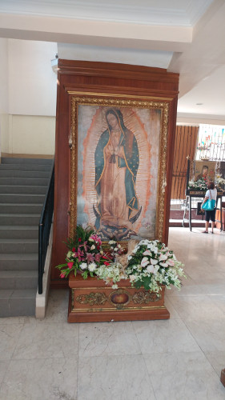
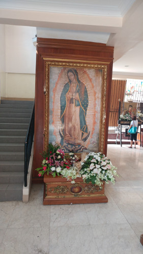

Manila is a large crowded modern city. There is construction going on everywhere. What I noticed about Manila is that everywhere you look there are construction cranes set up building new high-rise buildings. But the main Manila area is similar to a "shanty-town" type area. Most of this can probably be attributed to the fact that the majority of people are poor; and that the climate is mostly warm all year round.
Tranportation around Manila is "interesting". There appears to be no public transportation besides taxis. All of the other transportation is by personal cars, or these mini-buses they call "jeepneys" and "trykes" which are motorcycles equiped with side cars. There are large buses that transfer people between different towns, but no subway or rail systems.

Most people in The Philippines have a strong catholic faith. One of the places we visited was the "Our Lady of The Galapagos Shrine". It's one of the more popular shrines in the area.
 
